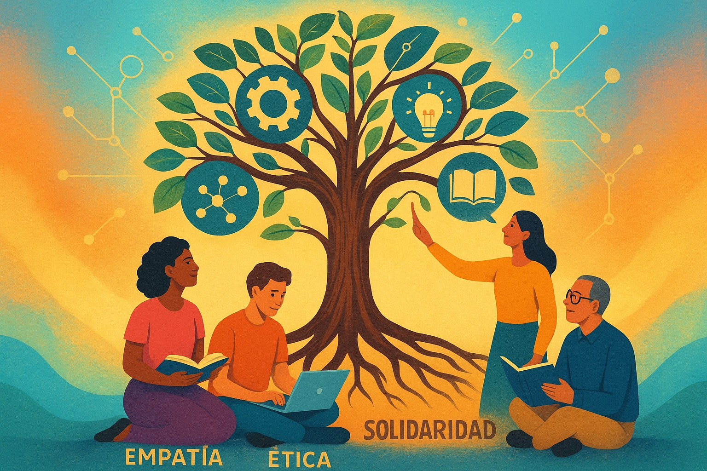

Resumen
Planteo una reflexión sobre cómo articular, de manera responsable, tres corrientes que hoy atraviesan la educación superior, contrastando la actual realidad:
- Los sistemas de recomendación basados en inteligencia artificial para entornos en línea.
- La educación disruptiva con enfoque socioformativo.
- La lectura socio-técnica de la disrupción digital y la consiguiente necesidad de una educación genuinamente digital.
La convergencia de estas líneas exige ir más allá del “uso” instrumental de tecnologías y asumir su carácter de mediaciones sociotécnicas que reorganizan el currículo, la evaluación y la ética del cuidado. Se propone un marco operativo de las 4C: Contexto, Curaduría algorítmica responsable, Cuidado ético y Coevaluación formativa para orientar decisiones pedagógicas en programas universitarios en modalidad virtual e híbrida. (Sanabria & Regil; Valles, Parra & Fierro; García-Perdomo; García Aretio; Mora).
Introducción

En la última década, la educación superior ha pasado de “incorporar TIC” a habitar ecosistemas digitales donde contenidos, trayectorias y evaluaciones se vuelven personalizables, medibles y recombinables. Esta mutación no es solo técnica: redefine tiempos, espacios, roles y expectativas de aprendizaje. Comprenderla requiere una mirada socio-técnica que explique cómo tecnologías y prácticas sociales se co-configuran, produciendo hibridaciones como clases, foros, tutorías, analytics, bibliotecas y/o repositorios con IA.
IA para la Recomendación en Educación en Línea: Promesa y Condiciones
Los sistemas de recomendación aplicados a recursos educativos mejoran la pertinencia, diversidad y oportunidad de los materiales. Su valor reside en alinear sugerencias con objetivos formativos y perfiles, transparentando criterios para evitar sesgos o “burbujas cognitivas”. La recomendación debe anclarse en el diseño instruccional, priorizando calidad y necesidades sobre popularidad.
Educación Disruptiva Socioformativa: Hacia la Formación Integral y Humanista

Los enfoques socioformativos promueven ambientes inclusivos, colaboración y uso de TAC para competencias transversales y proyectos vitales. Un estudio con 2.223 universitarios muestra que este modelo predice la formación humanista en ≈80%, impulsando currículos basados en problemas auténticos y evaluación situada.
Disrupción Digital: Una Lectura Socio-Técnica
La disrupción no es mera moda tecnológica; tecnología y sociedad se transforman mutuamente sin neutralidad. Introducir IA implica reconfiguración institucional, como políticas de datos, roles docentes y alfabetización algorítmica.
La Necesidad de una Educación Digital
La virtualidad forzada reveló que la educación digital requiere cultura pedagógica, calidad y ética: modelos didácticos coherentes para equidad y aprendizaje continuo. En zonas con brechas digitales, la IA y recursos offline pueden puente entre realidades educativas y avances tecnológicos.
¿Dónde Encaja la IA Recomendadora en un Proyecto Humanista?
La IA debe ampliar agencia, no sustituirla. En socioformación, apoya rutas y desafíos relevantes, con criterios visibles y metacognición. Integrada a proyectos auténticos, reduce riesgos algorítmicos y fomenta conocimiento integral.
La disrupción digital transforma enseñanza y aprendizaje, requiriendo pasar de usos instrumentales a escenarios significativos. Rincón y Quiñones (2017) enfatizan trascender visiones utilitaristas para culturas digitales colaborativas, convirtiendo docentes en mediadores y estudiantes en productores activos.
En contextos volátiles, como señala García (2019), la educación debe integrar metodologías críticas. La socioformación articula lo tecnológico con lo humanista, desarrollando pensamiento crítico y responsabilidad social mediante proyectos reales (Valles et al., 2023).
Un Marco Operativo de 4C para Programas Universitarios Virtuales e Híbridos
- Contexto: Mapear perfiles, brechas y metas; usar analítica para decisiones pedagógicas.
- Curaduría Algorítmica Responsable: Combinar IA con curaduría docente y anti-sesgos.
- Cuidado Ético: Políticas de datos, alfabetización y bienestar digital.
- Coevaluación Formativa: Integrar pares, autoevaluación y reflexión sobre procesos.
Implicaciones para la Docencia y la Gestión Curricular

- Rediseño de Roles: Docentes como curadores metacognitivos; estudiantes como negociadores de rutas.
- Evaluación Auténtica: Tareas basadas en problemas con IA para andamiaje transparente.
- Gobernanza de Datos: Comité ético para revisar métricas y equidad.
Una Convergencia Exigente
La disrupción valiosa mejora justicia educativa. Integrar IA socioformativa exige prácticas reflexivas y transparentes, midiendo una educación digital auténtica.
Referencias Bibliográficas
- Sanabria, G.; Regil, L. (2024). Inteligencia artificial para la recomendación de recursos en educación en línea. Enlace
- Valles, H., Parra, H., Fierro, L. A. (2023). La educación disruptiva socio formativa y el uso de la tecnología para la formación integral y humanista de estudiantes universitarios. Enlace
- García-Perdomo, V. (2019). Aproximación técnico-social al entendimiento de la disrupción digital. Enlace
- García Aretio, L. (2019). Necesidad de una educación digital en un mundo digital. RIED. Revista Iberoamericana de Educación a Distancia Enlace
- Mora, A. M. (2022). Disrupción en la educación. [Objeto virtual de Información OVI]. Repositorio Institucional UNAD. Enlace
- Morales, S. (2020). Escritura colaborativa. [Objeto virtual de información OVI]. Repositorio Institucional UNAD. Enlace